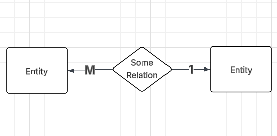
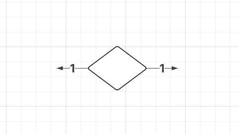
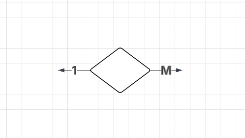
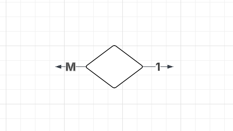
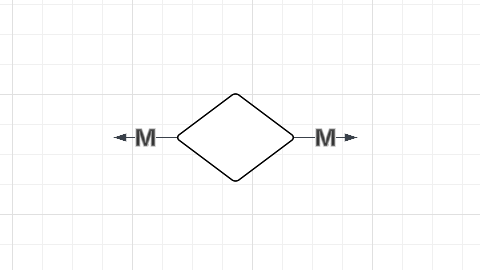

Database Management Systems
Table of Contents
- 1. Introduction
- 2. Levels of Abstraction
- 3. Schema
- 4. Types of SQL Commands
- 5. Relational Algebra
- 6. Joins
- 7. Functional Dependencies
- 8. Normalization
- 9. Transactions
- 10. Schedule
- 11. Storage Structure
1. Introduction
- A file system arranges files into directories in a storage device.
- While a file system is less complex, less expensive than a database management
system, the issues are:
- data redundancy (duplicates)
- data inconsistency (different locations have different data)
- data isolation (data is accidentally confined to some regions thanks to different file formats)
- atomicity issues (operations aren’t complete)
- A database is a collection of data. A management system is a piece of software that manage data.
- A Database Management System is software that stores, retrieves, and manages data in structured tables.
2. Levels of Abstraction
2.1. View/External Level
- Users and applications can access only the data relevant to them.
2.2. Logical/Conceptual Level
- Handles what data is stored in the database and all the relationships between them.
2.3. Physical/Internal Level
- Describes how the data is stored on the disk.
3. Schema
- A schema is a logical structure that describes how data is stored and used in a database.
3.1. What it describes
3.1.1. Entities
- An entity is any real world object with well defined property.
These are essentially tables in a database.

3.1.2. Attributes
- Attributes are columns in a database and they include what datatype they hold.
Key: Any set of columns that uniquely identify a row.
- Super Key
- Any set of columns that can uniquely identify a row.
- Candidate Key
- A super key with no unecessary columns.
- They are candidates to be the primary key.
- Primary Key
- The candidate key chosen to be the unique identifier for any row.
- Alternate Key
- Every candidate key that wasn’t chosen as the primary key.
- Foreign Key
- A set of columns in one table, pointing towards the primary key of the same/different table.
3.1.3. Relationships
- Relationships describe how exactly two tables and their instances are related to each other.
- Relationships are represented as Rombuses with markings on and beside them.
- Cardinality




- Participation Constraints
These are of two types: Total Participation and Partial Participation
Feature Total Participation Partial Participation Must participate? Yes No ER Diagram symbol Double line (`=`) Single line (`—`) Meaning All entity instances are in the relationship Some may not be involved
3.1.4. Data Independence
- It’s a property of DBMS that allows you to change schema (structure of a table) at one level, without having to change the schema as a higher level.
- To add another column to a database, you don’t need to change anything in the already existing columns.
- The ability to change physical data, without having to change logical schema is called physical independence.
- The ability to change logical schema without having to make changes at view level is called logical independence.
4. Types of SQL Commands
4.1. DDL
- Data Definition Language comprises of the languages used to create the database schema (the structure).
4.1.1. CREATE TABLE
Here is the basic structure of creating a table:
CREATE TABLE table_name ( column1 datatype [constraint], column2 datatype [constraint], ... );
Here
datatypecan be:Datatype Meaning NUMBERNumeric value (integers or decimals) VARCHAR2(n)Text up to n characters, in single quotes CHAR(n)Fixed-length string of n characters DATEDate and time CLOBLarge text Here,
constraintcan be:Constraint What It Does NOT NULLColumn must have a value Eg. name VARCHAR2(100) NOT NULLUNIQUEValue must not repeat Eg. email VARCHAR2(100) UNIQUEPRIMARY KEYUniquely identifies a row + can’t be null Eg. student_id NUMBER PRIMARY KEYFOREIGN KEYColumn that’s primary key of another table Eg. class_id NUMBER,FOREIGN KEY (class_id) REFERENCES classes (class_id)CHECKMust satisfy a condition Eg. age NUMBER check (age>=5)DEFAULTSets a default value Eg. country VARCHAR2(50) DEFAULT 'India'Here is a complete example:
CREATE TABLE students ( student_id NUMBER PRIMARY KEY, -- unique student number name VARCHAR2(100) NOT NULL, -- name is required age NUMBER CHECK (age >= 5 AND age <=60), -- must be 5 or older email VARCHAR2(100) UNIQUE, -- no two students can share email class_id NUMBER, -- refers to a class country VARCHAR2(50) DEFAULT 'India', FOREIGN KEY (class_id) REFERENCES classes(class_id) -- link to valid class );
4.1.2. ALTER TABLE
ALTER TABLE table_name ADD column_name datatype; ALTER TABLE table_name MODIFY column_name datatype; -- used to change datatype/size ALTER TABLE table_name RENAME column_name TO new_name; -- used to rename a column ALTER TABLE table_name DROP COLUMN column_name;
For example:
ALTER TABLE students ADD age NUMBER;
4.1.3. DROP TABLE
Deletes table and its data altogether.
DROP TABLE table_name;
4.1.4. TRUNCATE
Deletes all rows, but keeps structure intact.
TRUNCATE TABLE table_name;
4.1.5. RENAME
Renames an entire table.
RENAME students to imbeciles;
4.2. DML
- Data Manipulation Language is what we used to read/write on instances of data.
4.2.1. INSERT
INSERT INTO employees (emp_id, name, salary, dept_id) VALUES (101, 'Alice', 50000, 10);
4.2.2. UPDATE
UPDATE table_name SET column1 = value1, column2 = value2, ... WHERE condition;
For example:
UPDATE employees SET salary = 60000 WHERE emp_id = 101;
4.2.3. DELETE
DELETE FROM table_name WHERE condition;
For example:
DELETE FROM employees WHERE emp_id = 101;
- If you don’t give the
WHEREclause, it deletes all the rows. DELETE, deletes all the rows one by one, so if you need to clear the table,TRUNCATEis better because it deallocates all of that memory.- One thing to keep in mind is that
TRUNCATEis not logged and it is irreversible.
4.2.4. SELECT
- Syntax
SELECT column1, column2 as new_name, ... FROM table_name WHERE condition GROUP BY column_name ORDER BY column_name [ASC|DESC];
For example, consider this table
Employees:EmpID Name DeptID Salary HireDate 101 Alice D1 55000 2023-01-15 102 Bob D2 75000 2023-02-20 103 Charlie D3 60000 2023-03-10 104 Diana NULL 50000 2023-04-05 105 Ethan D2 80000 2023-05-12 106 Farah D5 45000 2023-06-01 Run the below command:
SELECT Name as EmpName, Salary FROM Employees WHERE Salary > 40000 ORDER BY Salary DESC;
The output is:
EmpName Salary Ethan 80000 Bob 75000
- Regex
There also exists the
LIKEoperator for regex:-- Find names starting with 'A' SELECT * FROM Employees WHERE EmpName LIKE 'A%'; -- % is the wild-card string -- Find names with exactly 3 characters SELECT * FROM Employees WHERE EmpName LIKE '___';
- Between
SELECT * FROM student WHERE age BETWEEN 17 AND 23;
- Adding Columns
SELECT subject1_marks + subject2_marks + subject3_marks AS tot_marks FROM student;
- Aggregate Functions
-- Number of rows SELECT COUNT(*) AS "Total Employees" FROM employees; -- Sum of all elements in that row SELECT SUM(salary) AS "Total Salary Cost" FROM employees; -- Average of all elements in that row SELECT AVG(salary) AS "Average Salary" FROM employees; -- MIN and MAX SELECT MIN(salary) AS "Lowest Salary", MAX(salary) AS "Highest Salary" FROM employees;
- Group By
Say you do something like:
SELECT COUNT(*) AS "Employee Count", AVG(salary) AS "Average Salary" FROM employees;
This makes a
2x1table that looks like:Employee Count Average Salary (no. of rows) (average of salary column) Employee Count just gives the number of rows in the entire table. Instead, if you want the number of rows of each department, you do:
-- Group by department SELECT dept_id, COUNT(*) AS "Employee Count", AVG(salary) AS "Average Salary" FROM employees GROUP BY dept_id;
And you get:
DEPTID Employee Count Average Salary 10 2 53500 20 3 78833.33
- Having
-- WHERE filters before grouping SELECT product, SUM(quantity) FROM sales WHERE price > 4 GROUP BY product; -- HAVING filters after grouping SELECT product, SUM(quantity) FROM sales GROUP BY product HAVING SUM(quantity) > 10;
4.2.5. Correlated Subqueries
- Where
Find students whose age is above the average age of their class.
SELECT s.name, s.age, s.class_id FROM students s WHERE s.age > ( SELECT AVG(s_sub.age) FROM students s_sub WHERE s_sub.class_id = s.class_id );
- From
Get Class wise average and then filter it
SELECT * FROM ( SELECT class_id, AVG(age) AS avg_age FROM students GROUP BY class_id ) WHERE avg_age > 17;
4.3. DCL
- Data Control Language manages rights and permissions.
4.3.1. GRANT
GRANT privilege ON object TO user;
For example:
GRANT SELECT, INSERT ON employees TO hr_user;
4.3.2. REVOKE
REVOKE privilege ON object TO user;
For example:
REVOKE SELECT, INSERT ON employees TO hr_user;
5. Relational Algebra
- Arity: Number of columns in a row
- Relational algebra is a procedural query language that uses a set of operations on tables.
5.1. Union Compatability Rule Between Two Tables
- Arity of both tables should be the same.
- Domain (datatype) of the \(i^{th}\) attribute/column should be the same.
5.2. Types of Operators
| Unary | Binary |
|---|---|
| Uses one operand | Uses two operands |
| A generic example would | A generic example would |
be x++ |
be a+b |
| An example here would be | An example here would be |
SELECT, PROJECT, RENAME |
UNION, JOIN, INTERSECT |
5.3. SELECT (σ )
SQL:
SELECT * FROM Books WHERE condition
Relational Algebra: \[\sigma_{condition}(Books)\]
SELECTin relational algebra is for theWHEREpart of SQL.
5.4. PROJECT (Π )
SQL:
SELECT a,b,c FROM Books
Relational Algebra: \[\Pi_{a,b,c}(Books}\]
PROJECTis for theSELECT a,b,cpart of SQL.- Union and Intersection is done on this notation.
6. Joins
- To combine two databases, you could use a normal cartesian product, but the issue is that you’ll get meaningless rows which are called spurious tuples.
For example, consider this table
Employees:EmpID Name DeptID Salary HireDate 101 Alice D1 55000 2023-01-15 102 Bob D2 75000 2023-02-20 103 Charlie D3 60000 2023-03-10 104 Diana NULL 50000 2023-04-05 105 Ethan D2 80000 2023-05-12 106 Farah D5 45000 2023-06-01 And the table
Departments:DeptID DeptName Location D1 HR Building A D2 Engineering Building B D3 Marketing Building C D4 Finance Building A
6.1. Inner Join
Selects only common elements in both tables.
SELECT e.Name, e.DeptID, d.DeptName FROM Employees e INNER JOIN Departments d ON e.DeptID = d.DeptID;
Output:
| EmpName | DeptID | DeptName |
|---|---|---|
| Alice | D1 | HR |
| Bob | D2 | Engineering |
| Charlie | D3 | Marketing |
| Ethan | D2 | Engineering |
6.2. Left Join (or Left Outer Join)
Everything from the left table, and only common elements from the right table.
SELECT e.EmpName, e.DeptID, d.DeptName FROM Employees e LEFT JOIN Departments d ON e.DeptID = d.DeptID;
| EmpName | DeptID | DeptName |
|---|---|---|
| Alice | D1 | HR |
| Bob | D2 | Engineering |
| Charlie | D3 | Marketing |
| Diana | NULL | NULL ← Diana kept, but no dept info |
| Ethan | D2 | Engineering |
| Farah | D5 | NULL ← Farah kept, but D5 doesn't exist |
6.3. Right Join (Right Outer Join)
Everything from the right table, and only common elements from the left table.
SELECT e.EmpName, e.DeptID, d.DeptName FROM Employees e RIGHT JOIN Departments d ON e.DeptID = d.DeptID;
| EmpName | DeptID | DeptName |
|---|---|---|
| Alice | D1 | HR |
| Bob | D2 | Engineering |
| Ethan | D2 | Engineering |
| Charlie | D3 | Marketing |
| NULL | D4 | Finance ← Finance dept kept, but no employees |
6.4. Full Outer Join
SELECT e.EmpName, e.DeptID, d.DeptName FROM Employees e FULL OUTER JOIN Departments d ON e.DeptID = d.DeptID;
| EmpName | DeptID | DeptName |
|---|---|---|
| Alice | D1 | HR |
| Bob | D2 | Engineering |
| Ethan | D2 | Engineering |
| Charlie | D3 | Marketing |
| Diana | NULL | NULL ← Employee with no dept |
| Farah | D5 | NULL ← Employee with invalid dept |
| NULL | D4 | Finance ← Department with no employees |
6.5. Self Join
You join a table with itself, so that you can compare rows in the same table. For example:
SELECT a.name AS student1, b.name AS student2, a.class_id FROM students a JOIN students b ON a.class_id = b.class_id WHERE a.student_id < b.student_id;
7. Functional Dependencies
- Functional dependencies tell us how attributes relate to each other.
Consider this example:
City State Bangalore Karnataka Mysore Karnataka Chennai Tamil Nadu The functional dependency here is \[City \rightarrow State\] This is read as City determines State.
- City almost always uniquely identifies state. You can’t tell the city if you are given the state, but you can tell the state given the city.
7.1. Armstrong’s Axioms
7.1.1. Reflexivity
- It’s always a larger set that determines a smaller set.
- City is a larger set than State because it has more unique elements.
- So if \(Y \subseteq X\), then \(X \rightarrow Y\). This is called reflexivity.
7.1.2. Augmentation
- If \(X \rightarrow Y\), then \(XZ \rightarrow YZ\).
7.1.3. Union and Decomposition
- Union: If \(X \rightarrow YZ\), then \(X \rightarrow Y\) and \(X \rightarrow Z\).
- Decomposition is vice versa.
7.1.4. Transitivity
- If \(X \rightarrow Y\) and \(Y \rightarrow Z\), then \(X \rightarrow Z\).
7.1.5. Psuedotransitivity
- If \(X \rightarrow Y\) and \(YA \rightarrow Z\), then \(XA \rightarrow Z\).
8. Normalization
8.1. Database Anomalies
Consider the below table with duplicate values:
| StudentID | StudentName | CourseID | CourseName | Instructor |
|---|---|---|---|---|
| 101 | Alice | C101 | DBMS | Dr. Smith |
| 101 | Alice | C102 | OS | Dr. Brown |
| 102 | Bob | C101 | DBMS | Dr. Smith |
| 103 | Charlie | C103 | AI | Dr. Wilson |
8.1.1. Insertion Anomaly
- This is when you can’t insert data without inserting unrelated data.
- For example, say the college has introduced a new course:
| StudentID | StudentName | CourseID | CourseName | Instructor |
|---|---|---|---|---|
| ? | ? | C104 | Blockchain | Dr. Johnson |
But in the table, you also need a studentID and a StudentName.
8.1.2. Update Anomaly
- This is when the same data is stored in many places, and you don’t update them all in case you need to change something.
For instance, if
Dr. Smithneeds to change toDr. John Smith, you’ll have inconsistent information:StudentID Course Instructor 101 DBMS Dr. John Smith 102 DBMS Dr. Smith
8.1.3. Deletion Anomaly
- This is when deleting a specific record causes the unintentional loss of other records.
For instance, if you delete the student
Charlie, you’ll also lose theAIcourse and the instructorDr. Wilson.StudentID StudentName CourseID CourseName Instructor 103 Charlie C103 AI Dr. Wilson
8.2. What Normalization is
Normalization is the process of splitting a table into smaller linked tables to fix database anomalies.
8.3. Types
8.3.1. 1NF
- It stands for first normal form.
- The rule is that every column must contain atomic/indivisible values.
- If they don’t, you create multiple rows.
Eg.
StudentID StudentName Courses 101 Alice DBMS, AI, OS becomes
StudentID StudentName Course 101 Alice DBMS 101 Alice AI 101 Alice OS
8.3.2. 2NF
- The rule of 2nd normal form is that it must already be in 1NF, and every non-key attribute must depend on the entire primary key, and not just a part of it.
- Basically, 2NF is for resolving partial dependencies.
- Say \((A, B)\) is the primary key. So for any attribute \(C\), \((A, B) \rightarrow C\) holds true.
- But if \(A \rightarrow C\) or \(B \rightarrow C\), then \(C\) doesn’t depend on the entire primary key. It only depends on \(A\) or \(B\).
- This is called a partial dependency.
- This is an issue because that partial attribute to repeat unnecessarily across every row that shares that key part.
Consider the table:
StudentID CourseID StudentName Grade S101 C101 Alice A S101 C102 Alice B S101 C103 Alice A S101 C104 Alice A S101 C105 Alice B - The table denotes enrollments into a course.
StudentID→StudentName, but the primary key is(StudentID, CourseID). So the name of the student doesn’t depend on what course he/she takes.- Hence, for every enrollment, the same details must repeat.
- Ultimately, this leads to update anomaly.
- To fix this, split the table into:
- Students (
StudentID,StudentName) - Courses (
CourseID,CourseName) - Enrollment (
StudentID,CourseID)
- Students (
8.3.3. 3NF
- It must already be in 2NF, and there should be no transitive dependency.
- A transitive dependency is when a non-key attribute depends on another non-key attribute instead of the primary key.
- For instance, if \(A\) is the primary key and \(A \rightarrow B\), and \(B \rightarrow C\) instead of \(A \rightarrow C\), it’s called a transitive dependency (\(A \rightarrow B \rightarrow C\))
Consider this example:
EmployeeID EmployeeName ZipCode City E101 Alice 560001 Bangalore E102 Bob 560001 Bangalore E103 Charlie 600001 Chennai EmployeeID→EmployeeID,EmployeeID→ZipCode,ZipCode→Cityholds true.- But
EmployeeID \rightarrow Citydoes not hold true. It has to come through zipcode.
- To fix this, just split this into two tables such that no transitive dependencies exist.
- Make a table with \(A \rightarrow B\) and \(A \rightarrow C\), and remove \(C\) from the original table.
8.3.4. BCNF
- It must be in 3NF, and for every functional dependency \(X \rightarrow Y\), \(X\) must be a superkey.
9. Transactions
- A transaction is a logical unit of work that involves one or more database operations.
9.1. Transaction Processing (ACID)
- Ensures that DBMS operations happen as one single indivisible unit with the help of ACID properties
9.1.1. Atomicity
- Transaction either completely finishes, or doesn’t happen at all. There’s no partially completed state.
9.1.2. Consistency
- Changes must reflect everywhere.
- All integrity constraints must satisfy.
9.1.3. Isolation
- Two transactions shouldn’t interfere with each other
9.1.4. Durability
- Transactions must be permanent.
9.2. How to manage Transactions
9.2.1. Logging and Recovery
9.2.2. Concurrency Control
- Locking
9.2.3. Transaction Boundaries
- Where it started
- Where it ended
- All of them are defined.
9.3. Simple Model of a Database
- A database is a collection of named data items
- Granularity: The properties of database operations don’t depend on how
granular the data is (how much of the database you’re operating on)
- A table consists of record
- A record consists of fields
9.4. Read and Write Operations
9.4.1. Read
- locate in disk
- disk → buffer in memory
- buffer → variable
9.4.2. Write
- locate in disk
- disk → buffer in memory
- variable → buffer
- buffer → disk
9.5. Recovery Manager
- It takes care of the below transactions by logging. The syntax given, is generally how logs look like.
- Write Ahead Logging
- Before writing actual data to the disk, first write the corresponding log data to the disk.
- WAL will always happen no matter what.
- This way, a log record is always created before writing data.
- Force Write
- Before a transaction is committed, any part of the log not written to the disk, should be written to the disk.
- Logs may still be in RAM, so every now and then they have to be flushed (written to the hard disk).
- If this “flushing” happens, it should happen before a commit.
9.5.1. begintransaction
[start_transaction, T]: TransactionTstarted.
9.5.2. read/write
[read_item, T, x]: TransactionTread the value of variablex[write_item, T, x, old_value, new_value]: TransactionTreplaced valueold_valueof variablexwithnew_value.
9.5.3. commit
[commit, T]: TransactionThas committed.- This happens when:
- All operations have completed successfully.
- All operations have been logged.
9.5.4. rollback
- Undo is for single operation, rollback is for all operations
- This happens when there exists a
[start_transaction, T], but no[commit, T].
9.5.5. redo
- Repeat if you’re not sure something has happened
- This basically performs all logged operations again.
9.5.6. endtransaction
9.6. Why Concurrent Executions
- Better use of processor and disk
- Reduced average response time
9.7. Concurrency Control Schemes
Mechanisms to achieve isolation.
9.8. Issues
9.8.1. Lost Update (write-write)
- Transactions are typically read → update → write
| Time | Transaction TX | Transaction TY |
|---|---|---|
| t1 | Reads A = 300 | |
| t2 | Adds 50 → A = 350 | |
| t3 | Reads A = 300 | |
| t4 | Adds A → 100 = 400 | |
| t5 | Write A = 400 | |
| t6 | Write A = 400 |
- before transaction A could write, transaction B reads and updates too
- transaction A writes (it wrote what B updated, not A)
- So the update that A wanted to make is lost
9.8.2. Dirty Read (write-read on uncommitted data)
| Time | Transaction TX | Transaction TY | Value of A |
|---|---|---|---|
| t1 | Reads A = 300 | 300 | |
| t2 | Adds 50 → A = 350 | 350 (in TX only) | |
| t3 | Writes A = 350 | 350 (uncommitted) | |
| t4 | Reads A = 350 | 350 | |
| t5 | TX fails → rollback | Reverts A = 300 |
- TY read an uncommitted value that didn’t make it to the final commit.
9.8.3. Unrepeatable Read (write-read on committed data)
| Time | T₁ (Reads) | T₂ (Updates) | Value of A |
|---|---|---|---|
| t₁ | T₁ reads A = 300 | 300 | |
| t₂ | T₂ reads A = 300 | 300 | |
| t₃ | T₂ adds 100 → A = 400 | 400 (in memory) | |
| t₄ | T₂ writes A = 400 and commits | 400 | |
| t₅ | T₁ reads A again = 400 | 400 |
- \(T_{1}\) read two times, and read two different values, because it \(T_{2}\) modified its value in between.
9.8.4. Blind Write
| Time | T₁ | T₂ | Value of X |
|---|---|---|---|
| t₁ | X = 10 | ||
| t₂ | Reads X = 10 | X = 10 | |
| t₃ | Adds 5 → X = 15 | ||
| t₄ | T₂: write(X = 20) (blind write) | ||
| t₅ | T₁: write(X = 15) | 15 |
- If T2 happened before T1 serially, the starting value would be 20 and not 10.
- T2 wouldn’t have been a blind write, if it had read X.
9.8.5. Phantom Read
| Time | Transaction TX | Transaction TY |
|---|---|---|
| t1 | Reads A | |
| t2 | Reads A | |
| t3 | Deletes A | |
| t4 | Reads A (which doesn’t exist anymore) |
10. Schedule
- Transactions can happen interleavingly, or parallely.
- When they happen interleavingly, the actual chronological order of operations happening is called a transaction schedule.
10.1. Why are Schedules Important
10.1.1. Concurrency
- This is the property in which transactions happen interleavingly, giving the illusion of simultaneous execution.
10.1.2. Consistency
- When the chronological order of operations is well-defined, there is no scope for data loss or inconsistency.
10.1.3. Integrity
- Transactions should happen reliably.
10.2. Number of Schedules you can make, given a certain number of transactions
- A transaction is a logical unit of work that involves one or more database operations.
- When you have multiple transactions, it simply means you have a bunch of database operations.
- Each arrangement of those database operations, is one schedule.
10.2.1. If there are 2 transactions
- Say T1 has \(m\) operations and T2 has \(n\) operations.
- The number of arrangements is \(^{(m+n)}C_{n}\) or \(^{(m+n)}C_{m}\).
- The value of either of these, is \(\frac{(m+n)!}{m!n!}\).
- All you have to do is choose the positions of any one transaction. The positions of other transactions are automatically there for you.
10.2.2. For more than 2 transactions
\[\frac{(m+n+o+p+q+..)!}{m!n!o!p!q!...}\] This is the multinomial coefficient.
10.3. Types of Schedules
10.3.1. Serial Schedules
| time | T1 | T2 |
|---|---|---|
| t1 | R(A) | |
| t2 | W(A) | |
| t3 | R(B) | |
| t4 | W(B) | |
| t5 | Commit | |
| t6 | R(A) | |
| t7 | W(B) | |
| t8 | Commit |
- There is no interleaving operations happening.
- Once T1 starts, it finishes execution, and then T2 starts and finishes executions.
- If there are \(N\) transactions, then the number of serial transactions happening is \(N!\).
10.3.2. Non Serial Schedules
| time | T1 | T2 |
|---|---|---|
| t1 | R(A) | |
| t2 | W(A) | |
| t3 | R(A) | |
| t4 | R(B) | |
| t5 | W(B) | |
| t6 | Commit | |
| t7 | W(B) | |
| t8 | Commit |
- There is concurrency happening here.
- \(\text{Number of non-serial schedules} = \text{Total number of schedules} - \text{Number of serial schedules}\)
- \(\text{Number of non-serial schedules} = \frac{(m+n+o+p+q+..)!}{m!n!o!p!q!...} - N!\)
10.3.3. Serializable Schedule
- If a non-serial schedule can be converted into a serial schedule, then it’s called a serializable schedule.
- Conflicting Operations
- Two operations from different transactions, conflict when
- at least one of them is a write
- and they access the same data item.
- The only non-conflicting pair of operations on the same data item, is when they both just read.
- Two operations from different transactions, conflict when
- How to Check Conflict Serializability
0 1 2 T1 T2 T3 0 R(A) 1 R(A) 2 R(B) 3 R(B) 4 R(B) 5 W(A) 6 W(B) - For this, we’ll be constructing a graph where the nodes are the transactions (T1, T2 and T3). The edges represent ordering constraints.
- Make an edge T1 → T2, labelled as R(B) and W(B). R(B) is at
(0,2)and W(B) is at(6,1). - Make an edge T2 → T1, labelled as R(A) and W(A). R(A) is at
(1,1)and W(A) is at(5,0). - Make an edge T3 → T2, labelled as R(B) and W(B). R(B) is at
(4,2)and W(B) is at(6,1). - If there are no cycles, then it’s conflict serializable.
- Finding Serialized Schedules
- The edges (ordering constraints), tell us which transaction should come first.
- If the graph is T3 ← T1 → T2, it means that T1 should come before T2 and T3, but the order of T2 and T3 with respect to each other don’t matter.
- So the possible serial schedules allowed are:
- T1 → T2 → T3
- T1 → T3 → T2
- To find this, you can simply do topological sort starting from any of the nodes (preferably the nodes with more outgoing edges).
- View Serializability
- This means that even if transactions run concurrently, the results will be the same as if they ran serially.
- Method 1 for checking view serializability of a schedule
- First make a serial version of the schedule T1, called T2
- Now check for the following rules for view equivalent
- Initial Read: In both the schedules, it must be the same transaction making the first read.
- Update Read: If in one schedule, transaction T1 reads a value written by transaction T2, then in the other schedule too, transaction T1 should read the value written by transaction T2.
- Final Write: In both schedules, the same transaction must make the last write.
- First make a serial version of the schedule T1, called T2
- Method 2 for checking view serializability of a schedule
- Check for Conflict Serializability
- If two schedules are conflict serializable, then they’re view serializable for sure.
- So first check for conflict serializability.
- If it’s not conflict serializable, it doesn’t mean it’s not view serializable. You’ll have to use other ways to find out.
- Check for the lack of blind write (to eliminate)
- The lack of blind write means no view serializability.
- In other words, if there is no blind write, then it’s not view serializable for sure.
- If there is a blind write, you’ll again have to use other ways to find out.
- Make a dependency graph and check for a cycle (to eliminate)
- If transaction T1 reads a value, and transaction T2 writes that value, then make an edge T1 → T2 (T1 should happen before T2).
- Say, among T1, T2, T3, it is T1 that makes the last write on a value, then (T2, T3) → T1, as T1 should happen after T2 and T3.
- If there is a cycle, then this is not view serializable.
- These are extensions to the rules in method 1.
- Check for Conflict Serializability
10.3.4. Non-Serializable Schedules
- Recoverable Schedule
If the transaction that did a dirty read, commits after the other transaction commits, then it’s a recoverable schedule.
T1 T2 W(X) R(X) ← Dirty Read Commit Commit (Hence it’s recoverable) - If there are no dirty reads, then it’s a recoverable schedule by default.
- If it’s conflict serializable, then it’s recoverable for sure. If not, you’ll have to use other ways.
- Irrecoverable Schedule
If the transaction that did a dirty read, commits before the other transaction commits, then it’s a irrecoverable schedule.
T1 T2 W(X) R(X) ← Dirty Read Commit (Hence it’s irrecoverable) Commit
- Types of Recoverable Schedules
- Cascadeless Schedule
- Before understanding what cascadeless schedules are, we must know what a cascading rollback is.
If one transaction fails, all other transactions that read its uncommitted data have to roll back.
T1 T2 T3 W(X) R(X) R(X) Abort - T2 should rollback because it used T1’s uncommitted data.
- T3 should rollback because it used T2’s data, which is in turn, T1’s uncommitted data.
- This is why it’s “cascading”, as it’s causing many dependent rollbacks.
- This is still recoverable, because T2 and T3 haven’t committed before the abort. If they had, it would have been irrecoverable.
- In a cascadeless schedule, every read must be a committed read. A read must happen after a commit.
- In other words, there are no dirty reads.
- Every cascadeless schedule is recoverable.
- Strict Schedule
Every read must be a committed read, and every write should be a committed write too.
T1 T2 W(X) Commit R(X) or W(X) is now possible - Every strict schedule is cascadeless and recoverable.
- Cascadeless Schedule
10.3.5. Equivalence of Schedules
10.4. Concurrency Control
10.4.1. Lock Based Concurrency Control
A lock is a variable that is assigned to a data item, to ensure isolation and non-interference.
- Binary Locks
- The lock variable has only two values: 1 for locked, 0 for unlocked.
- This variable is applied on all data items.
- This works for conflicting operations, but it also locks even if both operations are reads. This is a disadvantage.
- Shared/Exclusive Locks
- This lock recognizes that read-read is no conflict, and introduces the concept of multi-mode locking.
- This time it’s not binary (locked or unlocked). It has 3 stages:
- S-Lock
- This is the read-lock/shared lock.
- If a transaction wants to read and the data item doesn’t have a write-lock, then the S-lock is granted.
- Different transactions can hold a shared lock each, on the same data item.
Algorithm for locking:
S(A) // Transaction requests Shared lock on A { if L(A) = 0 // Case 1: A is completely unlocked { L(A) = 'S' // Set it to Shared mode N(A) = 1 // One transaction now has shared lock update lock table } else if L(A) = 'S' // Case 2: A already has shared lock(s) { N(A) = N(A) + 1 // Add one more to the counter update lock table // Another transaction joins the readers } else // Case 3: A has Exclusive lock { insert T into waiting queue // Must wait! suspend T // Transaction goes to sleep } }
- X-Lock
- This is the write-lock/exclusive lock.
- If a transaction wants to write/read and the data item doesn’t have any lock, then the X-lock is granted.
- One data item can only have 1 exclusive lock, and it belongs to only 1 transaction.
Algorithm:
X(A) // Transaction requests Exclusive lock on A { if L(A) = 0 // Only if A is completely unlocked then { L(A) = 'X' // Set to Exclusive mode update lock table } else // A has ANY lock (Shared or Exclusive) { Insert T into queue // Must wait! suspend T // Transaction goes to sleep } }
- Unlocked
U(A) // Transaction releases lock on A { if L(A) = 'X' // Case 1: Releasing an Exclusive lock { L(A) = 0 // Unlock completely Activate a transaction from queue // Wake up waiting transaction } else if L(A) = 'S' // Case 2: Releasing a Shared lock { N(A) = N(A) - 1 // Decrease the counter if N(A) = 0 // If this was the last shared lock { L(A) = 0 // Unlock completely activate a transaction from queue // Wake up waiting transaction } } }
- 2 Phase Locks
- Traditional locks don’t guarantee serializability.
- Here there are 2 phases: growing and shrinking
- Growing phase is when you can only acquire a new lock, or upgrade a lock (S → X), but you can’t release.
- Shrinking phase is when you can only release a lock, or downgrade a lock (X → S), but you can’t acquire.
- The idea is to simply not release a lock, until you have all the locks needed. This forces all operations of one transaction to happen together.
- Here’s an example:
Time Transaction T1 Transaction T2 Phase t1 Lock-S(A) T1: Growing t2 Read A = 1000 T1: Growing t3 Lock-X(A) [upgrade] T1: Growing t4 A = 900, Write A T1: Growing t5 Lock-X(B) T1: Growing t6 Read B = 500 [T1 LOCK POINT] t7 B = 600, Write B T1: Growing t8 Lock-S(A) - WAITS! T2: Can’t proceed t9 Unlock(A) T1: Shrinking t10 ✓ Gets Lock-S(A) T2: Growing t11 Read A = 900 T2: Growing t12 Unlock(B) T1: Shrinking t13 Lock-S(B) T2: Growing t14 Read B = 600 [T2 LOCK POINT] t15 Total = 1500 ✓ T2: Growing t16 Unlock(A) T2: Shrinking t17 Unlock(B) T2: Shrinking Without 2PL:
Time Transaction T1 Transaction T2 t1 Lock(A), Read A=1000 t2 A=900, Write A t3 Unlock(A) → Issue: Released early! t4 Lock(A), Read A=900 t5 Lock(B), Read B=500 t6 Total = 1400 → Issue: WRONG! t7 Unlock(A), Unlock(B) t8 Lock(B), Read B=500 t9 B=600, Write B t10 Unlock(B) - Strict 2PL
Exclusive locks are not released until a commit or abort happens.
- Rigorous 2PM
- ALL locks are not released until a commit or abort happens.
- Reduces concurrency though.
- Timestamp Ordering Protocol
- Prioritize based on arrival time. A smaller time stamp means that the operation is older, and hence it gets more priority.
- Each data item maintains two time stamps:
- Read Timestamp R-TS(X)
- Write Timestamp W-TS(X)
- This only cares about deadlocks, and not recoverability.
- Transaction Ti reading X
First a value should be written. Then a later transaction should be allowed to read it.
if TS(Ti) < W-TS(X) // is timestamp(Ti) smaller (older) than timestamp when X was written? { REJECT; Rollback Ti; } else { Allow -> Execute Read(X) R-TS(X) = max(R-TS(X), TS(Ti)) // which ever is newer (original read timestamp, or current transaction) }
- Transaction Ti writing X
Older transactions can’t write on values being read/written in the future.
if TS(Ti) < R-TS(X) // is timestamp(Ti) smaller (older) than timestamp when X was read? { REJECT; Rollback Ti; } else if TS(Ti) < W-TS(X) // is timestamp(Ti) smaller (older) than timestamp when X was written? { REJECT; Rollback Ti; } else { Allow -> Execute Write(X) W-TS(X) = TS(Ti) }
- Deadlocks
- Wait-Die
- If the older transaction requests a lock held by the younger one, the older transaction waits (it keeps aging).
- If the younger transaction requests a lock held by the older one, the younger one is killed, and is restarted later with the same timestamp (it won’t age, it’s just being teleported into the future).
- Wound-Wait
- If the older transaction requests a lock held by the younger one, the younger one rolls back to the older one. (younger one won’t age, but it goes back to the past).
- If the younger transaction requests a lock held by the older one, the younger one waits (it keeps aging).
- Wait-Die
11. Storage Structure
11.1. Sequential
- Like Linked List
- Efficient for large sequential Processing
- Slow access and update times
11.2. Heap
- Random but fast insertion
- Slow Search
11.3. Clustered
- Related things are grouped together
- Use Clustering Index
- Index is a data structure used to improve speed of data retrieval
- Primary Index built on primary key, secondary index built on non-primary attributes
11.4. B+ Trees
- It’s a self-balancing tree
- Faster read/write \((O(log(n))\), less dbms operations
- Actual data only in leaf nodes. All internal nodes just for navigating.
- All leaf nodes are linked as a linked list, hence range queries like
WHEREis supported.
11.4.1. Order of B+ tree
- Order is the Max number of children
- Max keys = (order - 1)
- Keys are the data values and they’re everywhere.
- If there are two children, the parent is the smallest element of the right child. A copy of the smallest element of the right child becomes the parent.
11.5. Hashing
- Concept of Buckets
- Good for equality search and large datasets.
- Good for
JOINoperations. - It’s bad for
RANGEqueries.